Build tool — capture #card at exactly 1200×630, save as share.jpg at the repository root, JPEG under 300 kB. No vehicle, no count, no date: the catalogue URL never changes and messengers cache a preview per URL for weeks.